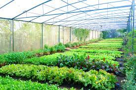

Integrated Organic farming
Integrated Farming - UNI 11233-2009 new European agriculture organic standard (IF),
integrated production or Integrated Farm Management is a whole farm management system which aims to
deliver more sustainable agriculture. It is a dynamic approach which can be applied to any farming
system around the world. It involves attention to detail and continuous improvement in all areas of
a farming business through informed management processes. Integrated Farming combines the best of
modern tools and technologies with traditional practices according to a given site and situation,
often employing many cultivation techniques in a small growing area.
History
Integrated Pest Management can be seen as starting point for a holistic approach to agricultural
production. Following the excessive use of crop protection chemicals, first steps in IPM were taken
in fruit production at the end of the 1950s. The concept was then further developed globally in all
major crops. On the basis of results of the system-oriented IPM approach, models for Integrated Crop
Management were developed. Initially, animal husbandry was not seen as part of such integrated
approaches (Lütke Entrup et al., 1998 1).
In the years to follow, various national and regional initiatives and projects were formed. These
include LEAF (Linking Environment And Farming) in the UK, FNL (Fördergemeinschaft Nachhaltige
Landwirtschaft e.V.)[8] in Germany, FARRE (Forum des Agriculteurs Responsables Respectueux de
l'Environnement)[7] in France, FILL (Fördergemeinschaft Integrierte Landbewirtschaftung Luxemburg)
or OiB (Odling i Balans)[9] in Sweden. However, there are few if any figures on the uptake of
Integrated Farming in the major crops throughout Europe for example, leading to a recommendation by
the European Economic and Social Committee in February 2014, that the EU should carry out an
in-depth analysis of integrated production in Europe in order to obtain insights into the current
situation and potential developments.[10] There is evidence, however, that between 60 and 80% of
pome, stone and soft fruits were grown, controlled and marketed according to "Integrated Production
Guidelines" in 1999 already in Germany for example.